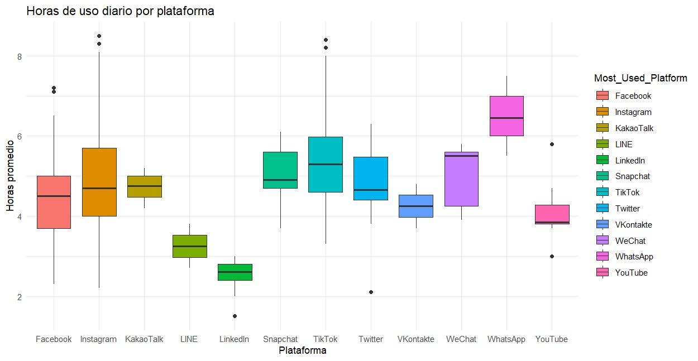
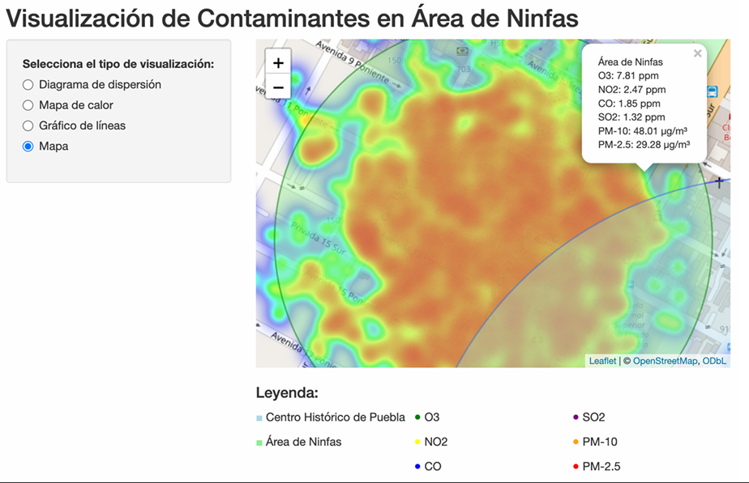
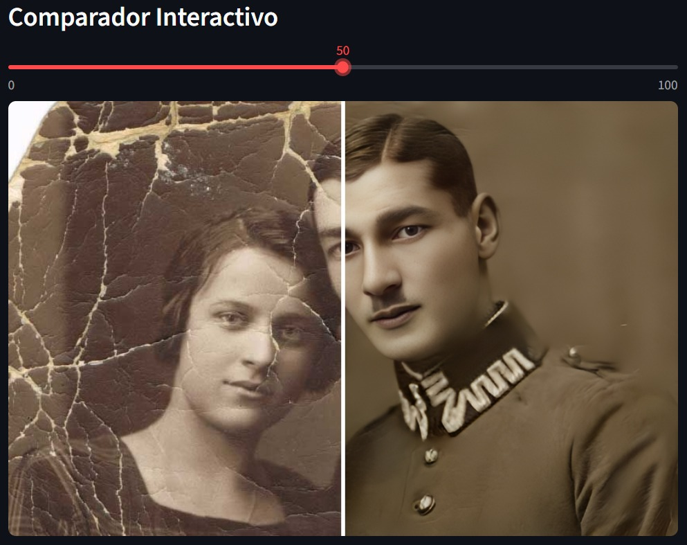
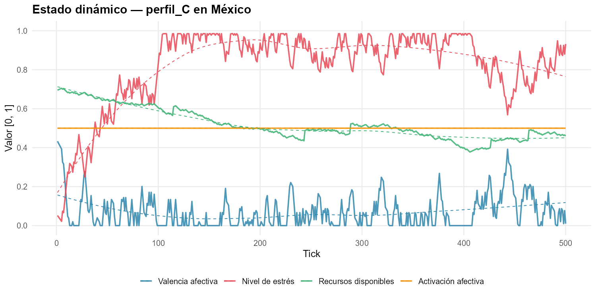
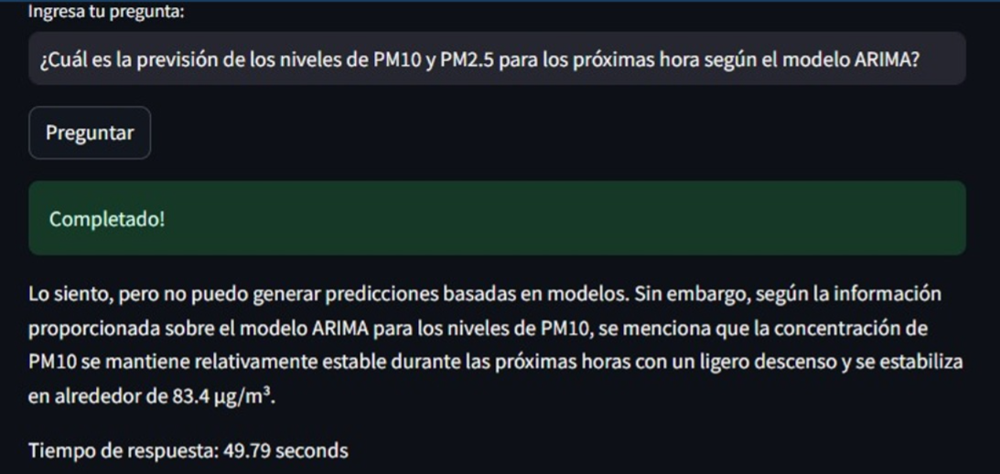

Projects & Research
Academic Research

NLP Rule-Based System for Chat Analysis
Designed a fuzzy-logic inference system to convert WhatsApp exports into behavioral metrics. Evaluated against a survey dataset of 251 participants and 753 messages, finding slight correlations with anxiety indicators.

Social Media Addiction Risk Profiling
Built and evaluated supervised (CART) and unsupervised (K-means, PAM) machine learning models to classify behavioral risk profiles, achieving 95% test accuracy and a Kappa of 0.93.

PM Air Quality Time Series Forecasting
Analyzed 4 years of historical data using ARIMA and TBATS models. Built an interactive Shiny web app to communicate predictions to non-technical stakeholders. Published in Springer.
Applied Projects & Software

AI-Based Photo Restoration Web App
Deployed an interactive web application that restores damaged real-world photographs using pretrained deep learning models (GFPGAN, Real-ESRGAN). Built a custom model-caching layer to significantly cut inference time.

TRON NEHO: Agent-Based Simulation
Engineered a multi-agent simulation modeling 20+ psychological traits through a Takagi-Sugeno fuzzy-logic engine. Leveraged a multi-objective genetic algorithm (NSGA-II) to evolve synthetic profiles.

Environmental QA Llama Chatbot
Developed during Datathon Puebla. Analyzed urban air quality data and integrated a Llama language model to construct a chatbot capable of answering user questions about environmental metrics in plain language.